Índice de la guía
- 1. La pantalla de un vistazo
- 2. Empezar el día
- 3. Cambiar tu estado
- 4. Ver a tu equipo
- 5. Pedir un permiso o una cita médica
- 6. Pedir vacaciones
- 7. Ver y cancelar lo que pediste
- 8. Mover un feriado
- 9. Tus avisos
- 10. Tus tiempos
- 11. El organigrama
- 12. Tu menú
- 13. La app de escritorio
- 14. Tu llave de Bitrix (webhook)
- 15. Terminar el día
- 16. La plantita de la oficina
- 17. Preguntas frecuentes
Oficina Virtual para colaboradores
La Oficina Virtual es el lugar donde todo el equipo de VLA se ve trabajando, aunque cada uno esté en su casa. Ahí marcás tu entrada y tu salida, mostrás qué estás haciendo y pedís tus permisos y vacaciones.
Para abrirla, entrá a system.somosvla.com con tu usuario y elegí Oficina en el menú.
Esta guía la volvés a abrir cuando quieras desde el ícono del libro, arriba a la derecha de la oficina.
Las capturas son de una oficina de ejemplo. Los nombres y las situaciones son inventados.
La pantalla de un vistazo
Así se ve la oficina cuando ya entraste. Cada número de la imagen está explicado abajo.
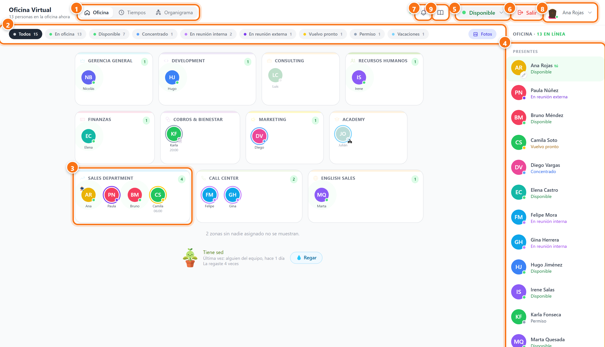
- 1Pestañas. Cambian entre la Oficina (el mapa), tus Tiempos y el Organigrama. La pestaña blanca es la que estás viendo.
- 2Filtros. Muestran solo a la gente en un estado, por ejemplo quién está Disponible. Todos vuelve a mostrar a todo el equipo. Fotos cambia las iniciales por las fotos.
- 3El mapa. Cada recuadro es un área de la empresa, con la gente que está ahí. El color del círculo es su estado.
- 4Presentes. La lista de todos, con su estado escrito. Vos aparecés primero, con la palabra tú.
- 5Tu estado. Lo que los demás ven de vos. Lo cambiás desde acá.
- 6Salir (o Entrar a la oficina si todavía no entraste).
- 7La campana. Tus avisos: las respuestas a lo que pediste. El número rojo dice cuántos no leíste.
- 8Tu menú. Tu avatar, tus ausencias y la app de escritorio.
- 9Esta guía. El ícono del libro la abre en otra pestaña, para que la sigas al lado de la oficina.
Empezar el día
Cuando empezás a trabajar, tocá el botón verde Entrar a la oficina. Con eso aparecés en el mapa como Disponible y se abre tu jornada de Bitrix, no hace falta abrirla aparte.
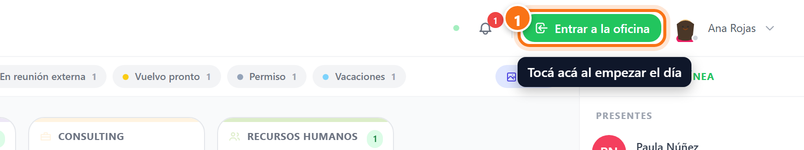
Ya entraste. En su lugar vas a ver tu estado y el botón rojo Salir.
Cambiar tu estado
Tu estado le dice al equipo si te pueden escribir ahora. Tocá el botón de tu estado (arriba a la derecha, el que dice Disponible) y elegí uno de la lista.
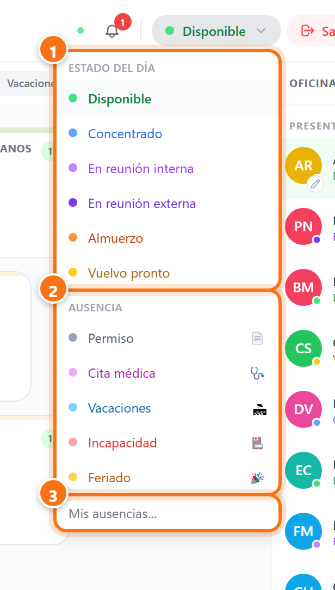
- 1Estado del día: lo que estás haciendo ahora.
- 2Ausencia: para pedir un permiso, una cita médica, vacaciones, cargar una incapacidad o mover un feriado. Se explican más abajo.
- 3Mis ausencias: la lista de todo lo que pediste.
Concentrado, Vuelvo pronto o Reunión externa
Estos estados piden una frase corta que explique qué estás haciendo. Tus compañeros la ven al pasar el mouse sobre vos.
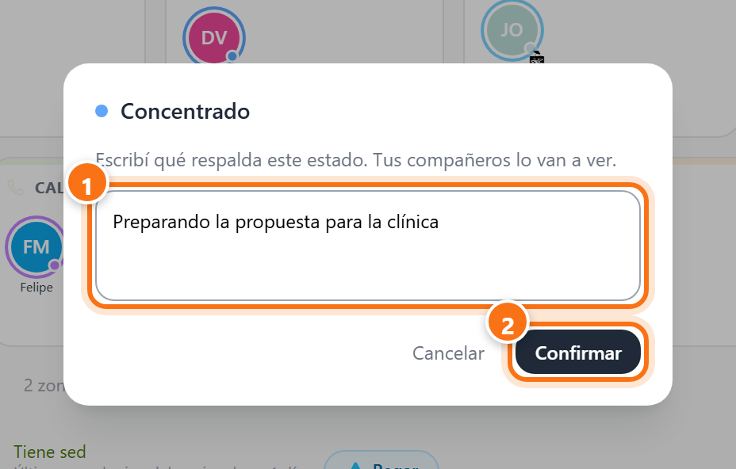
- 1Escribí qué estás haciendo, con 10 letras como mínimo.
- 2Tocá Confirmar. Mientras falten letras, el botón te dice cuántas.
Almuerzo
Elegí desde qué hora y hasta qué hora vas a almorzar, y tocá Confirmar.
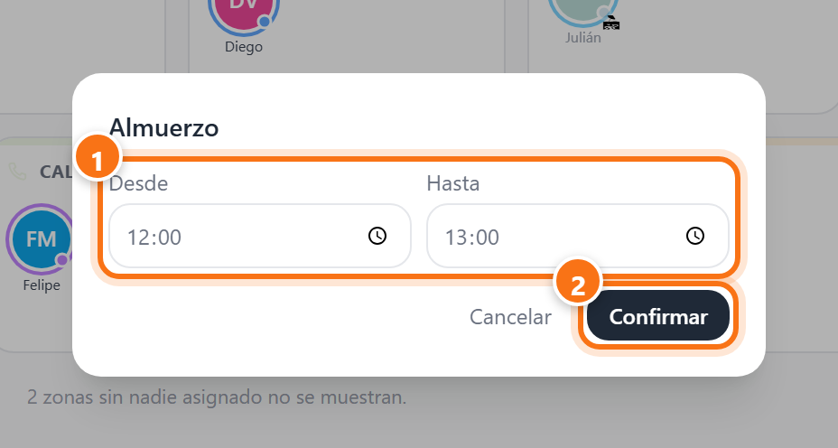
- 1La hora en que salís y la hora en que volvés.
- 2Confirmar.
Volver del almuerzo o de una pausa
Cuando llega la hora de volver, el sistema no te pone Disponible solo. Te avisa que el almuerzo terminó, y vos tenés que marcar que volviste.
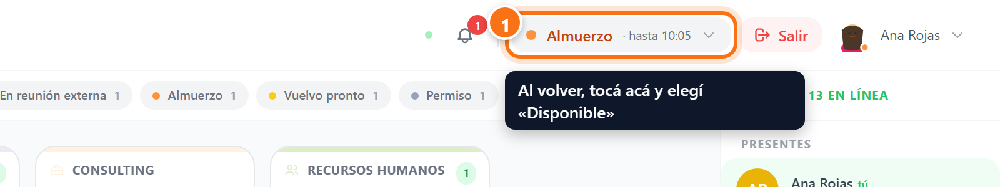
- Tocá el botón de tu estado, que dice Almuerzo.
- Elegí Disponible.
Hasta que marques Disponible, el tiempo sigue contando como almuerzo y el reloj se pone en rojo. Tu jefe y RRHH lo ven. Pasa lo mismo con Vuelvo pronto y Concentrado, y al terminar un permiso o una cita quedás en Vuelvo pronto hasta que marques que volviste.
Reunión interna
Si te vas a reunir con compañeros, invitalos desde la oficina. A ellos les llega la invitación.
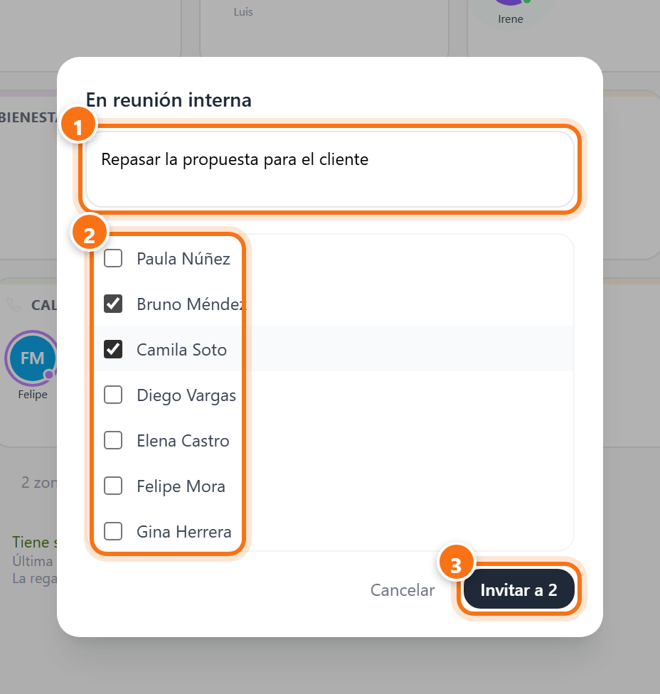
- 1Para qué es la reunión.
- 2Marcá a quién invitás. Quien no está en la oficina aparece apagado y no se puede elegir.
- 3Tocá Invitar. El botón dice a cuántas personas.
Si te invitan a una reunión
Te aparece esta ventana. Si aceptás, tu estado cambia solo a En reunión interna.
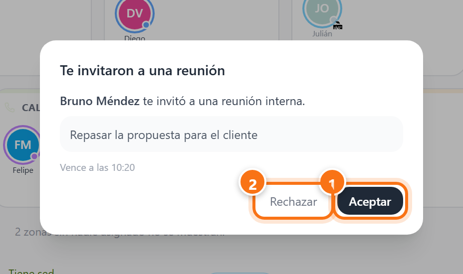
- 1Aceptar: entrás a la reunión.
- 2Rechazar: seguís en lo tuyo. Cerrar la ventana también cuenta como rechazar.
La invitación dura pocos minutos. Si no la respondés a tiempo, vence.
Ver a tu equipo
Pasá el mouse sobre cualquier persona del mapa para ver su tarjeta: qué está haciendo, desde cuándo y a qué hora entró.
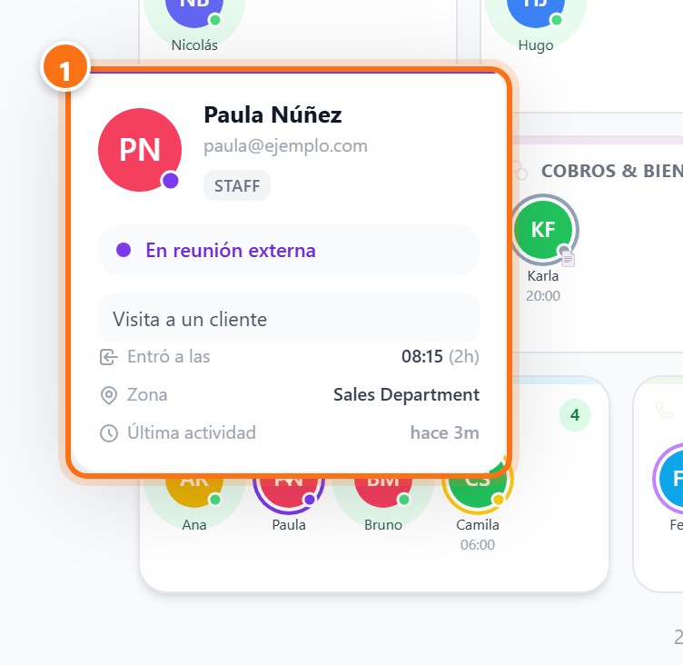
- 1La tarjeta dice el estado, el motivo, cuándo entró, en qué área está y su última actividad.
Usá los filtros de arriba del mapa. Por ejemplo, Disponible deja solo a quien te puede responder ahora.
Pedir un permiso o una cita médica
Abrí tu estado y elegí Permiso o Cita médica. Los dos funcionan igual: un día y un rango de horas.
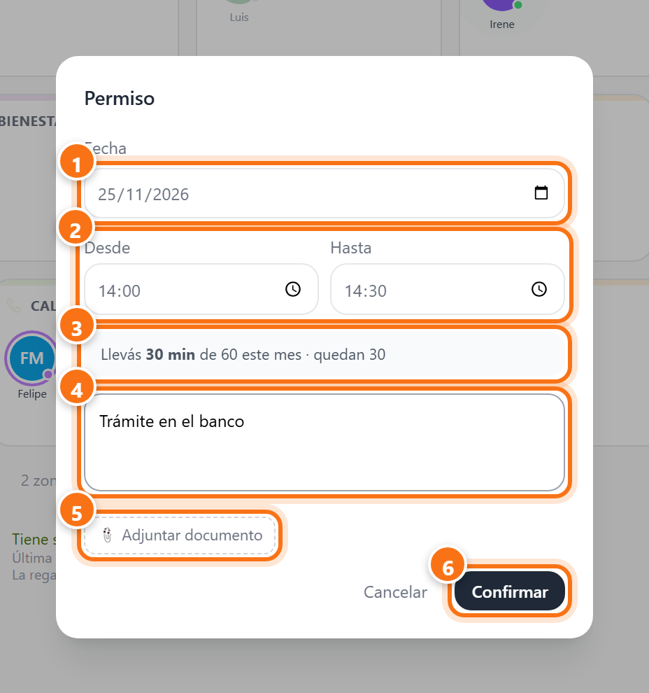
- 1El día.
- 2Desde qué hora y hasta qué hora.
- 3Cuánto permiso usaste este mes y cuánto te queda.
- 4El motivo, con 10 letras como mínimo.
- 5Si tenés un comprobante (una cita, una constancia), adjuntalo acá.
- 6Confirmar.
Permiso: tenés 1 hora por mes, y la podés partir (por ejemplo 30 + 30 minutos).
Cita médica: hasta 3 horas por cita.
El permiso y la cita valen desde que los pedís, y tu jefe los aprueba después. Si los rechaza antes de que empiecen, se quitan.
Pedir vacaciones
Abrí tu estado y elegí Vacaciones. En el calendario tocá el primer día y después el último. Si es un solo día, tocalo una vez.
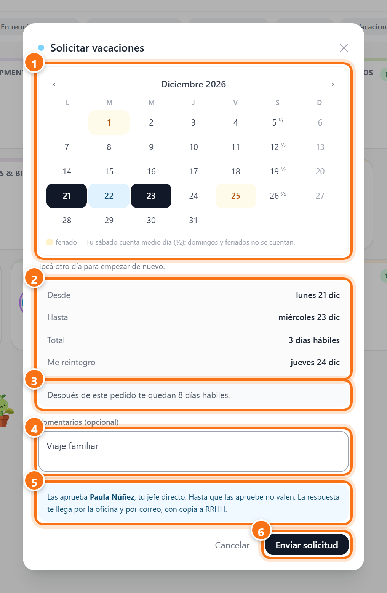
- 1El calendario. Con las flechas cambiás de mes. Los feriados están en amarillo y los días que no se cuentan, en gris. Si trabajás el sábado medio día, el sábado lleva un ½.
- 2El resumen. Desde, hasta, cuántos días hábiles te descuenta y qué día volvés a trabajar.
- 3Tu saldo: cuántos días te quedan después de este pedido.
- 4Comentarios, si querés agregar algo. No es obligatorio.
- 5Quién las aprueba. Tu jefe directo, o RRHH si no tenés jefe asignado.
- 6Enviar solicitud.
Mientras tu jefe no responda, en tus ausencias dicen Esperando a tu jefe. La respuesta te llega a la campana y a tu correo, con copia a RRHH.
Si no te alcanza el saldo
No podés pedir más días de los que tenés. Si elegís de más, la ventana te lo dice y no te deja enviar.
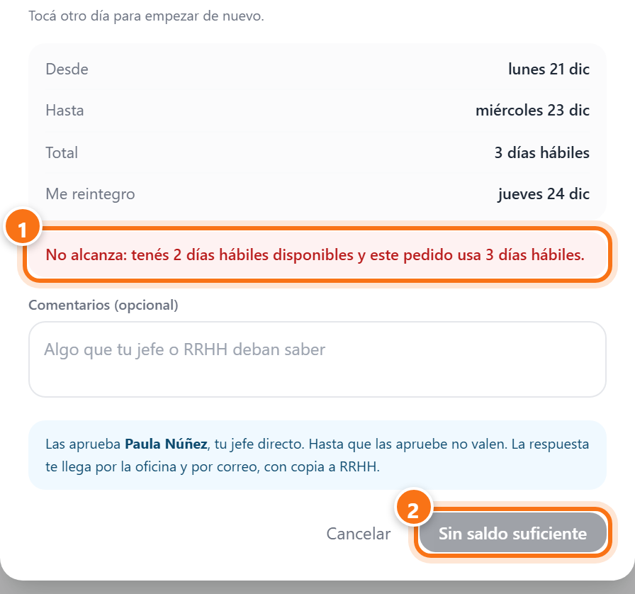
- 1Cuántos días tenés y cuántos usa el pedido.
- 2El botón queda apagado. Elegí menos días, o hablá con RRHH si creés que tu saldo está mal.
Lo carga RRHH y después suma 1,25 días por mes. Las vacaciones aprobadas lo descuentan, y las que pediste y todavía no te respondieron quedan apartadas. Si RRHH todavía no cargó tu saldo, la ventana lo dice y te deja pedir igual.
Incapacidad
Se carga igual que las vacaciones, con el mismo calendario, eligiendo Incapacidad. La diferencia es que tenés que escribir el motivo y adjuntar la boleta. Vale desde que la cargás, y la podés cargar hasta 60 días después.
Ver y cancelar lo que pediste
Abrí tu menú (tu nombre, arriba a la derecha) y elegí Mis ausencias y solicitudes. Ahí está todo lo que pediste, con su estado.
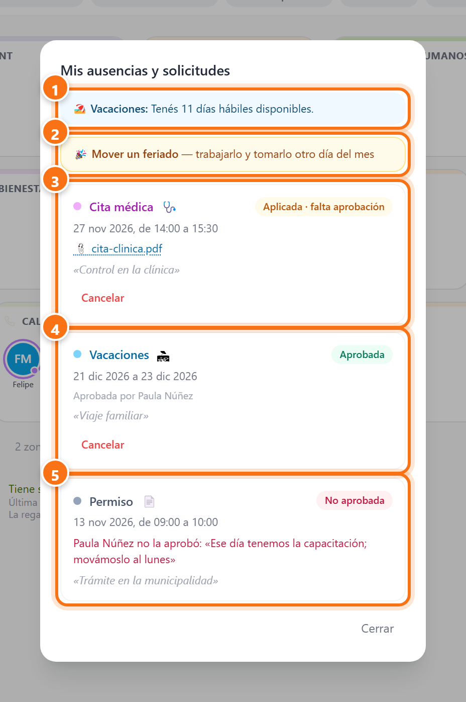
- 1Tus vacaciones: cuántos días hábiles tenés disponibles.
- 2Mover un feriado: se explica en el capítulo siguiente.
- 3Aplicada, falta aprobación: ya vale, pero tu jefe todavía no respondió.
- 4Aprobada: dice quién la aprobó.
- 5No aprobada: dice quién y por qué.
Para cancelar, tocá Cancelar en la solicitud y confirmá. Solo se puede antes de que empiece. Lo cancelado queda en tu historial.
Mover un feriado
Si vas a trabajar un feriado, podés tomarlo otro día del mismo mes que trabajes: de lunes a viernes, o el sábado si lo trabajás. Unos días antes del feriado te aparece este aviso abajo de la pantalla:
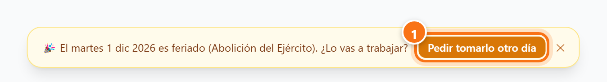
Tocá Pedir tomarlo otro día. También lo encontrás en tus ausencias, con el botón Mover un feriado.
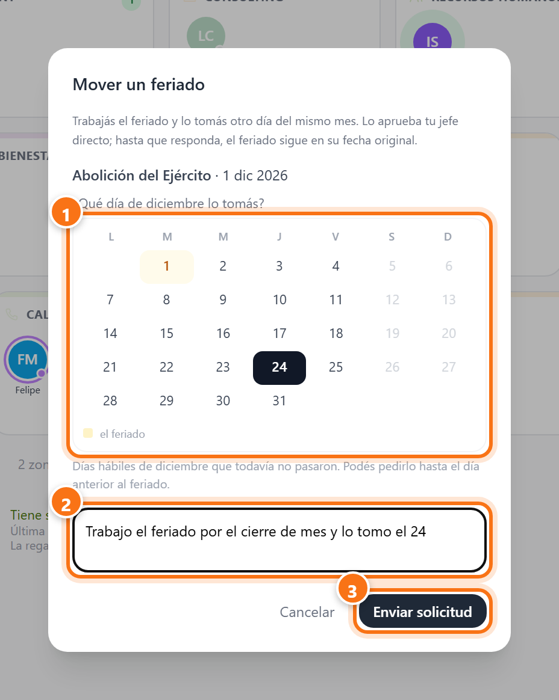
- 1Elegí el día en que lo vas a tomar.
- 2Contá por qué lo trabajás.
- 3Enviar solicitud.
Tenés que pedirlo antes del feriado. Lo aprueba tu jefe, y hasta que responda el feriado sigue en su fecha.
Tus avisos
Cuando tu jefe responde algo que pediste, te llega un aviso a la campana. Tocá la campana para verlos.
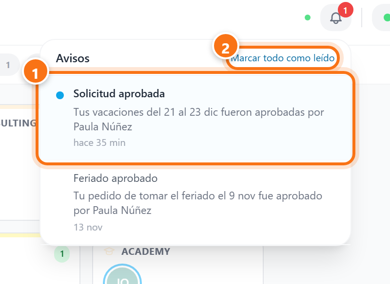
- 1Un aviso sin leer tiene un punto azul. Tocalo para abrir lo que dice.
- 2Marcar todo como leído borra el número rojo.
Las respuestas a tus solicitudes también te llegan por correo y por Bitrix.
Al pie de la campana podés activar los avisos del navegador. Si dice que están bloqueados, habilitalos desde el candado que está al lado de la dirección de la página.
Tus tiempos
En la pestaña Tiempos ves cuánto estuviste en la oficina y en qué estados.
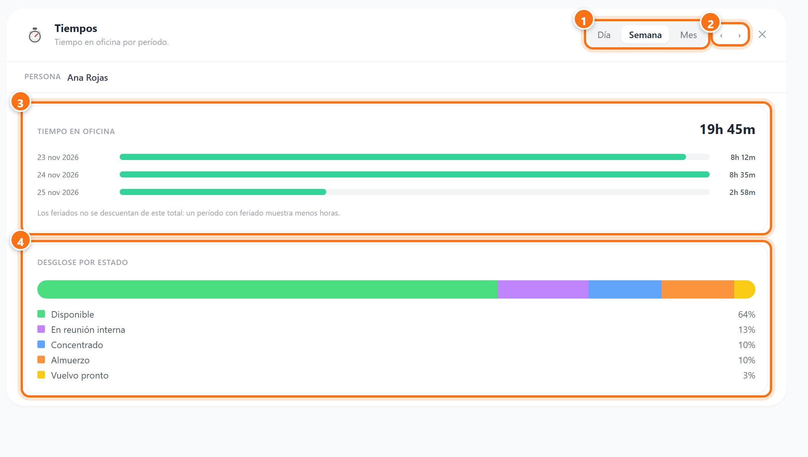
- 1Elegí si querés ver un día, una semana o un mes.
- 2Con las flechas vas al período anterior o al siguiente.
- 3El total del período y cuánto estuviste cada día.
- 4Cómo se repartió tu tiempo entre los estados.
El organigrama
En la pestaña Organigrama ves quién depende de quién, con el estado y la hora local de cada persona, que sirve con los compañeros de otros países.
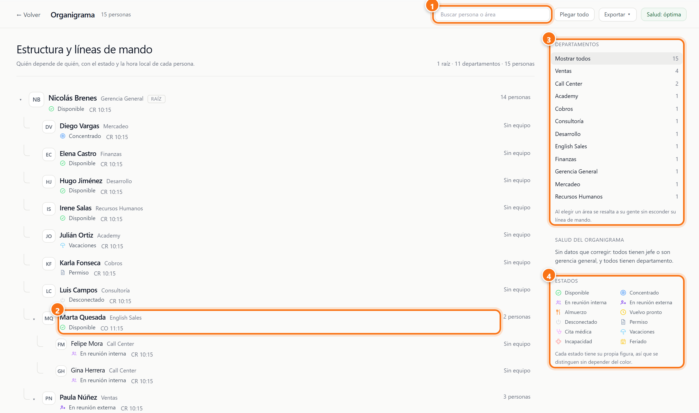
- 1Buscar a una persona o un área.
- 2Cada persona con su área, su estado y su hora local (CO 11:15 es la hora de Colombia).
- 3Departamentos: elegí uno para resaltar a su gente.
- 4Qué significa cada figura de estado.
La app de escritorio
VLA Oficina es una app para Windows que te deja usar la oficina sin tener el navegador abierto: cambiás tu estado, te llegan los avisos como notificaciones de Windows y ves y contestás tus mensajes de Bitrix. Se actualiza sola.
Abrí tu menú y elegí Instalar la app de escritorio (si ya la tenés, dice App de escritorio y Bitrix).
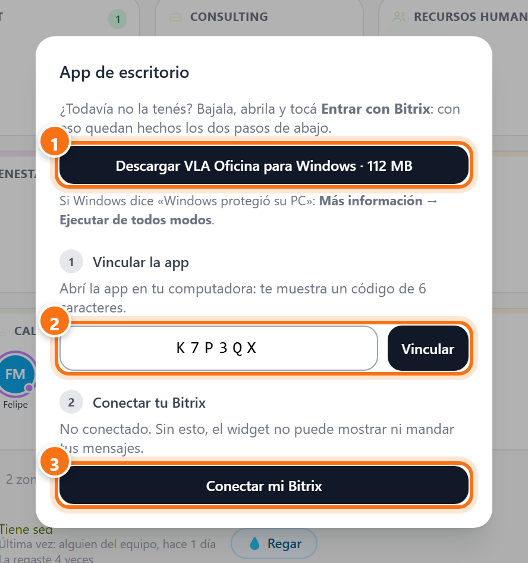
- 1Descargala y abrila. Si Windows dice «Windows protegió su PC», tocá Más información y después Ejecutar de todos modos.
- 2Vinculala: la app te muestra un código de 6 caracteres. Escribilo acá y tocá Vincular.
- 3Conectá tu Bitrix: te lleva a Bitrix para que des permiso, y volvés solo.
Si en la app tocás Entrar con Bitrix, los pasos 2 y 3 quedan hechos de una vez.
Con la app abierta, los avisos te llegan como notificación de Windows y el navegador no te repite el mismo aviso.
Tu llave de Bitrix (webhook)
Si usás una herramienta que trabaja con Bitrix (una planilla, n8n, un reporte o un programa propio), en lugar de un webhook de Bitrix usás una llave de la oficina. Funciona igual que un webhook, pero cada llave solo puede hacer lo que se le habilitó y cada llamada queda registrada.
- Conectá tu Bitrix. Es el paso 3 del capítulo anterior. Si ya lo hiciste para la app de escritorio, no hace falta repetirlo.
- Pedile la llave a un administrador del sistema. Contale para qué la querés (por ejemplo, «leer mis negociaciones para un reporte»): él elige qué puede hacer, hasta cuándo vale y cuántas llamadas por minuto admite.
- Guardala apenas te la den. La dirección completa se muestra una sola vez. Tiene esta forma:
https://system.somosvla.com/api/v1/p/bitrix-api/rest/<tu-llave>/ - Usala como un webhook: agregá el método de Bitrix al final. Por ejemplo:
https://system.somosvla.com/api/v1/p/bitrix-api/rest/<tu-llave>/crm.deal.list
Lo que haga en Bitrix queda a tu nombre y con tus permisos. No la compartas ni la pegues en lugares públicos. Si creés que alguien más la tiene, avisá a un administrador para que la revoque: deja de funcionar al instante.
Terminar el día
Al terminar, tocá Salir. Te aparece el informe del día, que le llega a tu jefe en Bitrix.
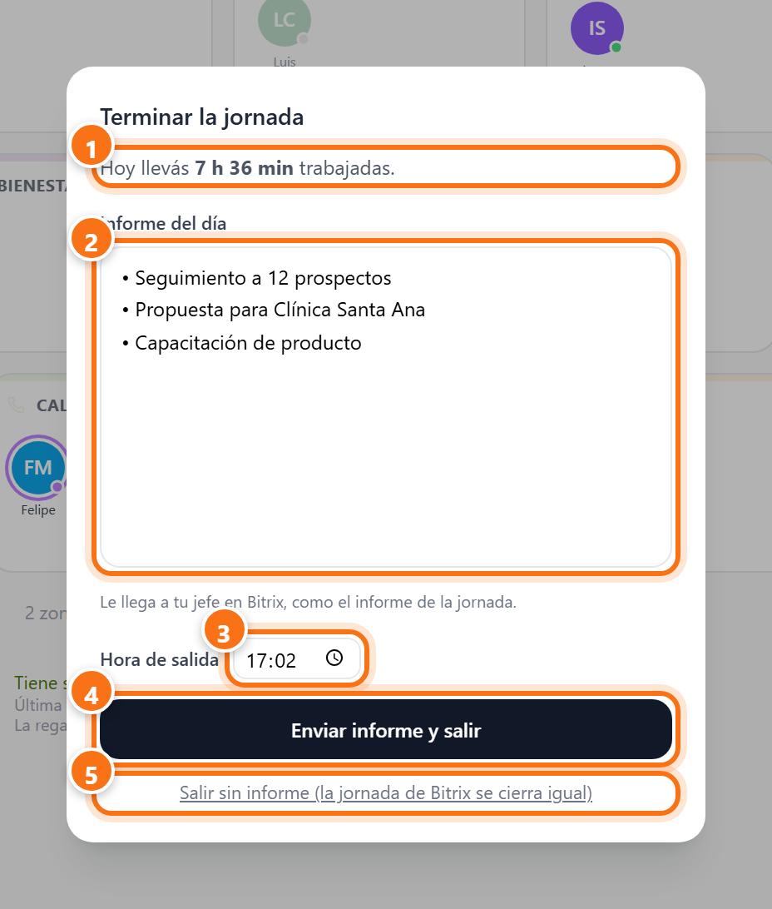
- 1Cuánto trabajaste hoy.
- 2El informe: qué hiciste en el día, en pocas líneas.
- 3La hora de salida. Normalmente ya está bien.
- 4Enviar informe y salir.
- 5Salir sin informe, si no querés escribirlo. La jornada de Bitrix se cierra igual.
La plantita de la oficina
Abajo del mapa hay una plantita que es de todos. Cuando tiene sed, cualquiera la puede regar.
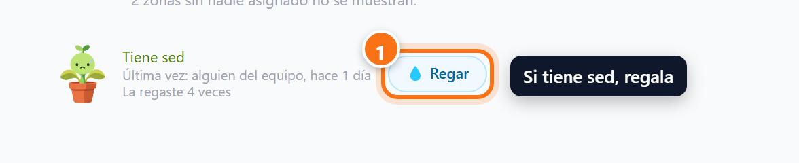
Preguntas frecuentes
Volví del almuerzo y sigo apareciendo en Almuerzo.
Es normal: volver es manual. Tocá tu estado y elegí Disponible.
Pedí vacaciones y dicen «Esperando a tu jefe».
Tu jefe todavía no las respondió. Cuando lo haga, te llega un aviso a la campana y un correo.
Me equivoqué al pedir un permiso.
Si todavía no empezó, cancelalo desde Mis ausencias y solicitudes y pedilo de nuevo.
No encuentro a un compañero en el mapa.
Revisá que el filtro de arriba esté en Todos. Si no entró a la oficina, aparece apagado.
Mi llave de Bitrix dejó de funcionar.
Puede que haya vencido, que la hayan revocado o que tu Bitrix se haya desconectado. Revisá en tu menú → App de escritorio y Bitrix que diga conectado, y si sigue igual, hablá con un administrador.
¿Cuántos días de vacaciones tengo?
Abrí tu menú y elegí Mis ausencias y solicitudes: está arriba de todo. También lo ves al pedir vacaciones. Si el número no te cierra, hablá con RRHH, que es quien lo carga.
¿Quién aprueba lo que pido?
Tu jefe directo. Si no tenés uno asignado, RRHH. Lo ves en la ventana de vacaciones, abajo de todo.
Me fui sin tocar Salir.
Hacelo apenas puedas. Si pasa mucho tiempo, el sistema cierra tu sesión solo, pero tus horas pueden quedar mal registradas.